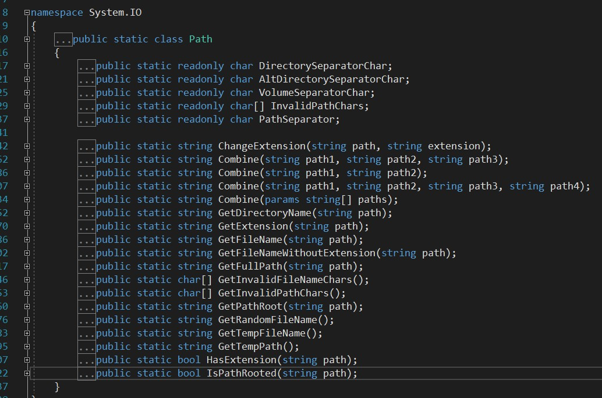
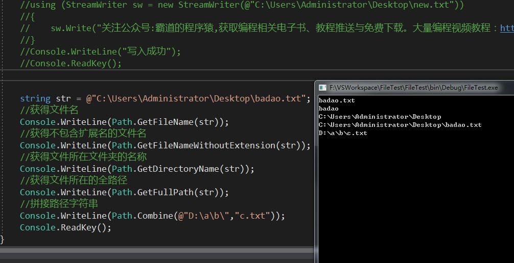

打开VS，输入Path，我们可以看到其定义。

都是静态方法，所以我们可以使用类名直接调用。
新建命令行程序，编码如下：
string str = @"C:\Users\Administrator\Desktop\badao.txt";
//获得文件名
Console.WriteLine(Path.GetFileName(str));
//获得不包含扩展名的文件名
Console.WriteLine(Path.GetFileNameWithoutExtension(str));
//获得文件所在文件夹的名称
Console.WriteLine(Path.GetDirectoryName(str));
//获得文件所在的全路径
Console.WriteLine(Path.GetFullPath(str));
//拼接路径字符串
Console.WriteLine(Path.Combine(@"D:\a\b\","c.txt"));
Console.ReadKey();

关注公众号
霸道的程序猿
获取编程相关电子书、教程推送与免费下载。
大量编程视频教程：https://space.bilibili.com/164396311